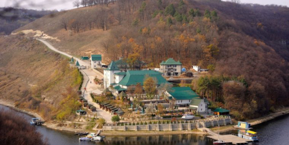
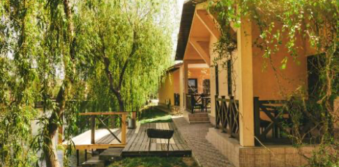

Забронювати будиночок
Оберіть місцерозташування
-

Незвідана Бакота
У Хмельницькій області розташований загублений край - Бакота. Мальовничий каньйон з давньою історією захоплює своїми просторами та незвичною атмосферою. Бджільництво, свіжий мед із польових трав, дотик до природи.
-

Полонини Карпат
Полонини Карпат, у селі Орів посеред гір розташувався затишний куточок для незабутніх вражень. Справжні Українські гори, власноручне сироваріння на полонині, водоспади та вікові дерева чекають на Вас.
-

Автентична Київщина
Неподалік центра Києва розташувалось автентичне українське село на території однойменного села Пирогово. Дерев'яні млини, запашний хліб, приготовлений своїми руками, українські пісні та багато іншого чекає на вас уже зараз.
-

Нетипова Одещина
В Одеській області знаходиться мальовниче містечко Вилкове. Його ще називають "українською Венецією". Вилкове - це містечко на воді, весь в каналах. Розташоване в місці, де зустрічаються річка Дунай і Чорне море. Люди пересуваються переважно човнами. Нетипове українське село не залишить Вас без вражень.